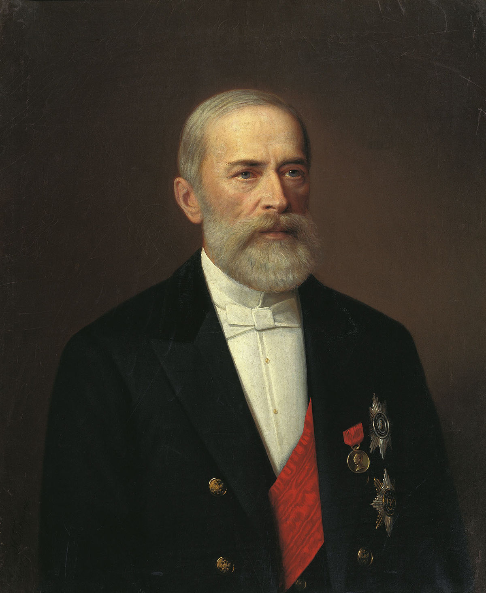

Николай Бунге
1823-1895
Биография
Николай Христианович Бунге (1823–1895) — российский экономист, профессор Киевского университета, министр финансов (1881–1886) и председатель Комитета министров. Бунге выступал за умеренные, постепенные реформы и социальную поддержку малоимущих слоёв населения, был сторонником активной роли государства в экономике.
Внёс вклад в развитие российской экономики, способствовал развитию частной собственности и индивидуального предпринимательства. Кроме того, реформировал фабричное промышленное производство и создал трудовой кодекс, который защищал рабочих фабрик и облегчал условия их труда.
Бунге также был выдающимся учёным и педагогом, его экономические труды внесли значительный вклад в развитие экономической науки в России.
Основные достижения
- Работа профессором-экономистом, чтение лекций, защита проектов, например, «О теории кредита» (1845–1890)
- Ликвидация подушного налога (1882)
- Ввел льготные кредиты для крестьян через Крестьянский поземельный банк (1882)
- Введение налога на доход от денежных капиталов, налога на прибыль, пошлины на безвозмездно переходящее имущество (1885)
- Учредил журнал «Вестник финансов, промышленности и торговли» (1885)